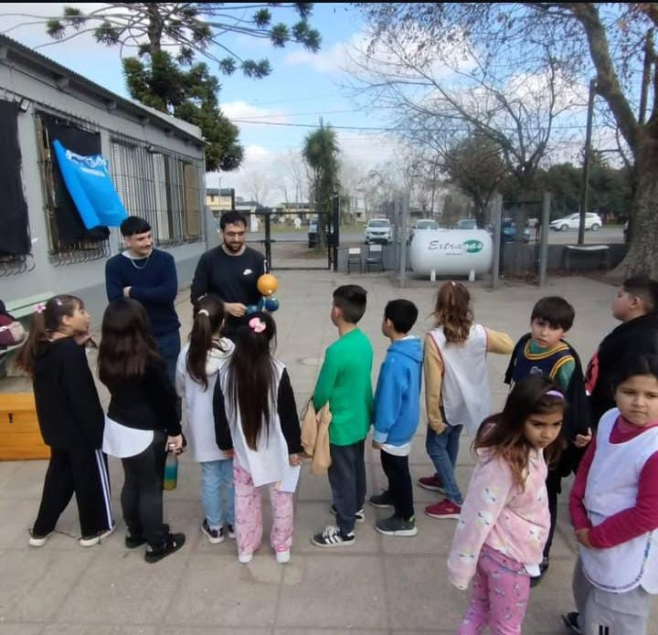
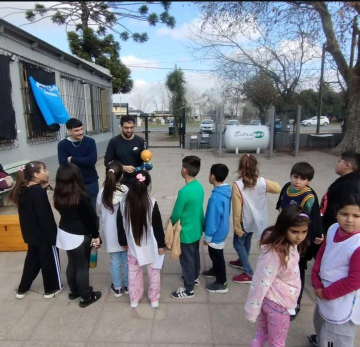

¿Quienes somos?
Somos un proyecto de extensión de la Facultad de Cs. Astronómicas y Geofísicas (FCAG-UNLP), formado por estudiantes avanzados de la carrera de Meteorología. Visitamos escuelas rurales y secundarias brindando talleres de meteorología, y también recibimos a las escuelas que nos visitan en nuestra facultad. Acercamos la ciencia del tiempo y el clima a las aulas y construimos juntos experiencias educativas ¡Aprendemos y enseñamos con cada encuentro!.
Nuestros Talleres en Imágenes

 

Cargando reportes...